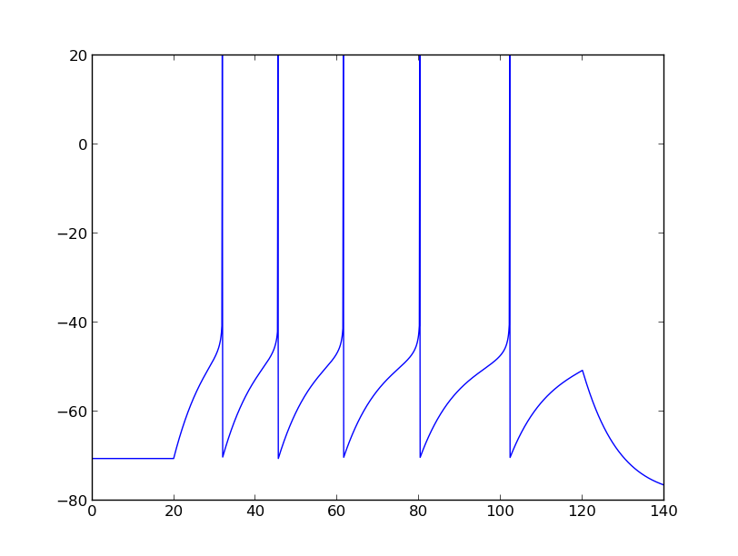

For the paper: Brette R. and Gerstner W. (2005), Adaptive Exponential Integrate-and-Fire Model as an Effective Description of Neuronal Activity, J. Neurophysiol. 94: 3637 - 3642. Abstract: We introduce a two-dimensional integrate-and-fire model that combines an exponential spike mechanism with an adaptation equation, based on recent theoretical findings. We describe a systematic method to estimate its parameters with simple electrophysiological protocols (current-clamp injection of pulses and ramps) and apply it to a detailed conductance-based model of a regular spiking neuron. Our simple model predicts correctly the timing of 96% of the spikes (+/-2 ms) of the detailed model in response to injection of noisy synaptic conductances. The model is especially reliable in high-conductance states, typical of cortical activity in vivo, in which intrinsic conductances were found to have a reduced role in shaping spike trains. These results are promising because this simple model has enough expressive power to reproduce qualitatively several electrophysiological classes described in vitro. A brian simulator model is available at this web page: http://briansimulator.org/docs/examples-frompapers_Brette_Gerstner_2005.html The default setting is the parameters of the regular spiking neuron model in table 1 in the paper (however other settings are available) and generates the following demo figure:  This simulation requires Brian which can be downloaded and installed from the instructions available at http://www.briansimulator.org/ For support on installing and using Brian simulations there is a support group at https://groups.google.com/group/briansupport.